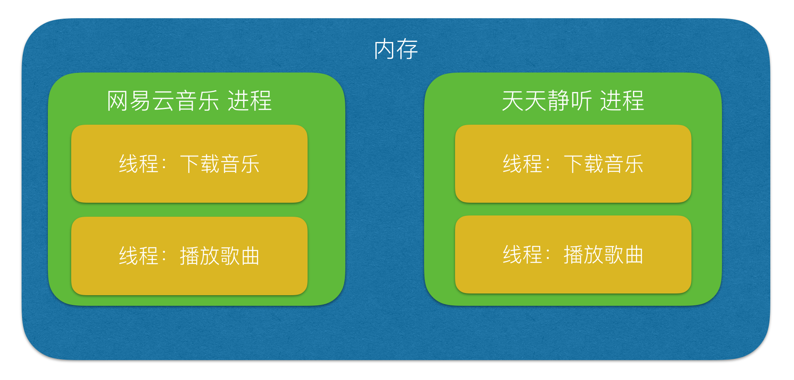
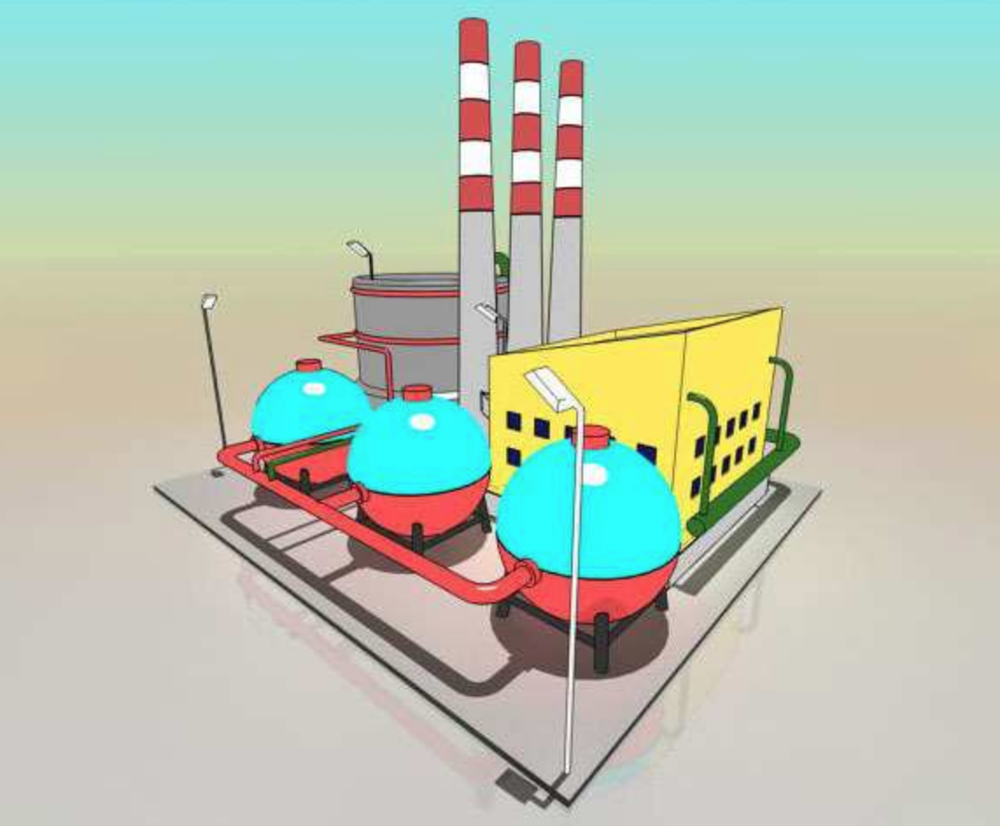
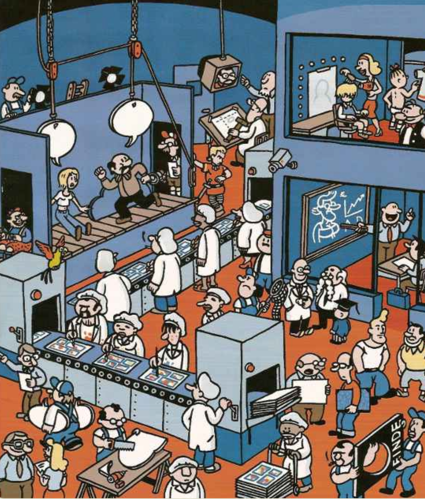
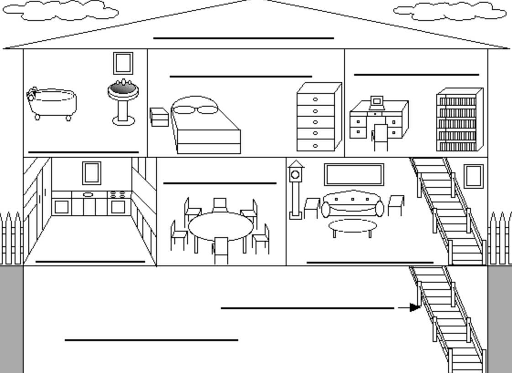

进程、线程对比
1. 通俗理解进程、线程
- 进程，能够完成多任务，比如 在一台电脑上能够同时运行多个QQ
- 线程，能够完成多任务，比如 一个QQ中的多个聊天窗口
定义的不同
进程是系统进行资源分配和调度的一个独立单位.
线程是进程的一个实体,是CPU调度和分派的基本单位,它是比进程更小的能独立运行的基本单位.线程自己基本上不拥有系统资源,只拥有一点在运行中必不可少的资源(如程序计数器,一组寄存器和栈),但是它可与同属一个进程的其他的线程共享进程所拥有的全部资源.
区别
- 一个程序至少有一个进程,一个进程至少有一个线程.
- 线程的划分尺度小于进程(资源比进程少)，使得多线程程序的并发性高。
- 进程在执行过程中拥有独立的内存单元，而多个线程共享内存，从而极大地提高了程序的运行效率 
- 线线程不能够独立执行，必须依存在进程中
- 可以将进程理解为工厂中的一条流水线，而其中的线程就是这个流水线上的工人
优缺点
线程和进程在使用上各有优缺点：线程执行开销小，但不利于资源的管理和保护；而进程正相反。
2. 通俗理解进程、线程
计算机的核心是CPU，它承担了所有的计算任务。它就像一座工厂，时刻在运行。 
假定工厂的电力有限，一次只能供给一个车间使用。也就是说，一个车间开工的时候，其他车间都必须停工。背后的含义就是，单个CPU一次只能运行一个任务。
进程就好比工厂的车间，它代表CPU所能处理的单个任务。任一时刻，CPU总是运行一个进程，其他进程处于非运行状态。
一个车间里，可以有很多工人。他们协同完成一个任务。

线程就好比车间里的工人。一个进程可以包括多个线程。
车间的空间是工人们共享的，比如许多房间是每个工人都可以进出的。这象征一个进程的内存空间是共享的，每个线程都可以使用这些共享内存。
